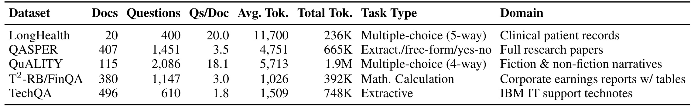
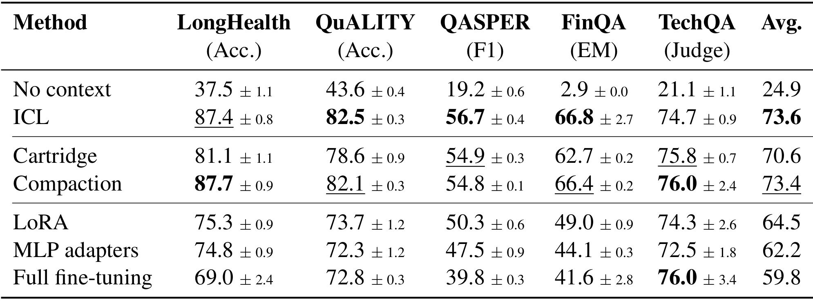
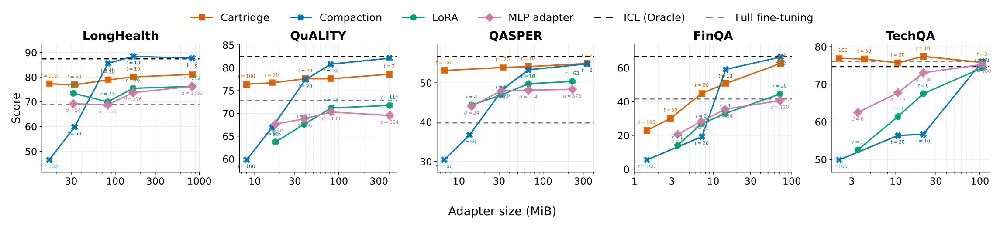
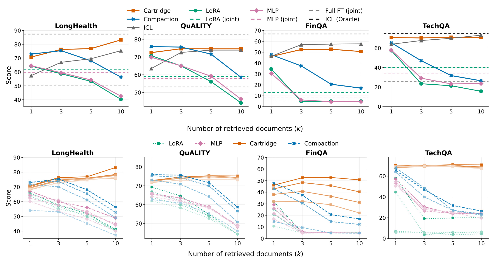
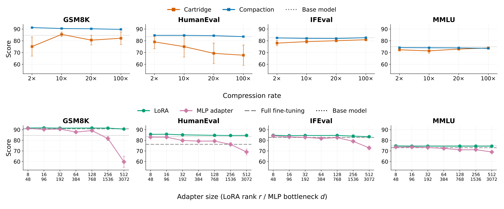
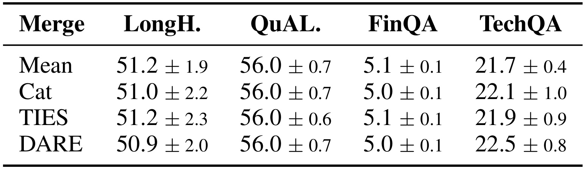
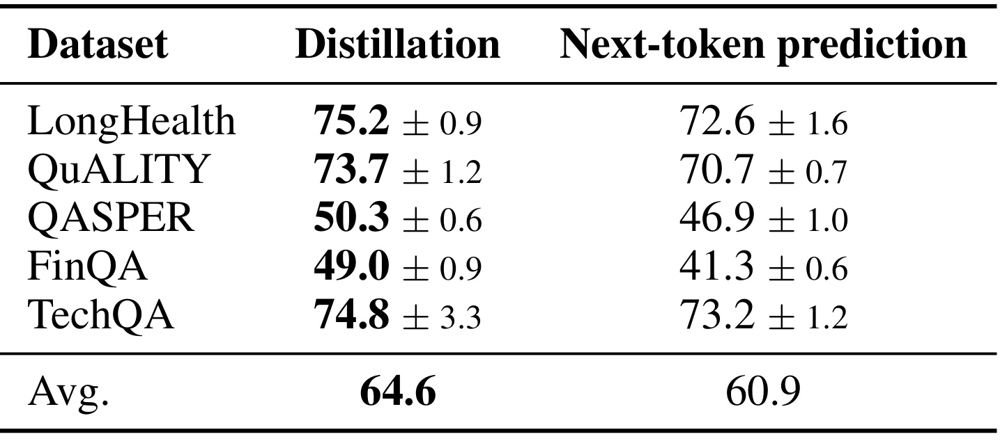
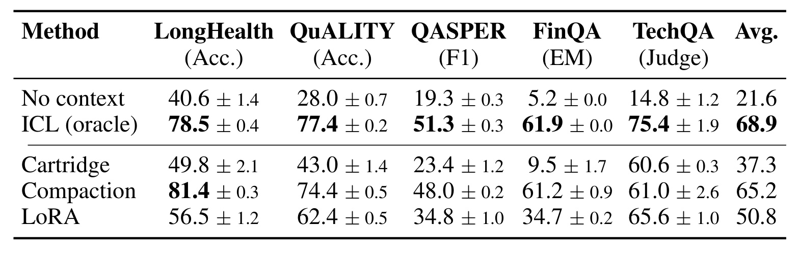
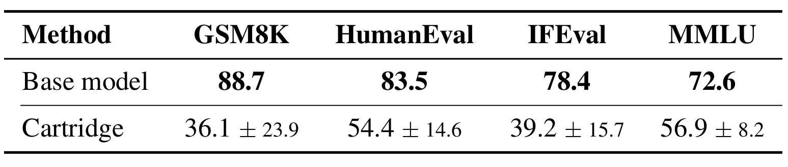

Amazon-DocumentPlacement：文档应放进上下文、键值表示还是模型参数？
Amazon AGI 的 Nathanaël Carraz Rakotonirina、Momchil Hardalov、Gonzalo Iglesias 与 Adrià de Gispert 在《Where Should a Document Live: Context, Representations, or Parameters?》中比较文档知识注入的三条路线。论文于 2026 年 9 月 15 日公开，本文按 9 月 17 日可得的 v1 全文精读。论文入口。本轮未发现本文独立公开代码入口。它是一项受控比较研究，DocumentPlacement 是此笔记使用的简称，并非作者提出的新模型名。
大模型需要访问预训练数据之外的新信息，但把文档放入上下文、压入键值表示或写入模型参数，分别承担不同的效率、成本和性能代价，没有一种方式始终获胜。已有比较又常在模型可能见过的维基百科材料上进行，难以区分真正注入新知识与召回已有记忆，也未充分检验多文档组合。
1. 背景和问题
1.1 文档位置决定的不只是上下文长度
企业知识库、技术支持材料、患者记录和财务报告不断变化，而已经训练完的大模型不可能天然知道其中所有细节。最直接的解决办法是把材料作为提示词的一部分交给模型；有很多材料时，先检索再把结果拼入上下文，就是常见的文本检索增强生成。这个做法保留了材料的可读性与细粒度信息，却也要求每次请求处理相应文本。问题不仅是一次能放多少字，还包括同一份长材料被许多问题反复访问时，预填充计算与解码注意力如何重复发生。论文把这部分成本作为研究起点，而没有把“文本太长”简单等同于所有知识任务的唯一瓶颈。
另一条路线是在请求到来之前把文档变成模型能够使用的适配器。本文把“适配器”用作宽泛术语：它既可以是被学习或压缩的键值缓存，也可以是附加到模型上的权重更新。前者仍让问题表示通过注意力访问一组外部状态，后者则让文档内容影响模型内部的计算映射。两者都不需要在查询提示词里重新放入完整原文，却并不意味着信息已用同样方式保存。键值缓存是否能与其他缓存拼接、权重增量是否能与其他文档的增量合并，是与单文档正确率分开的能力；因此，“离线编码一次”本身不能保证它是一种合格的检索替代方案。
还需要区分存储与计算。一个参数适配器可以固定秩或瓶颈维度，大小不随文档长度逐字增加；一个按固定压缩倍率构造的键值前缀，其大小通常随原文长度变化。相反，参数适配器需要在模型权重或计算路径上生效，键值前缀需要在每一步解码时被注意力访问。若只比较一个固定超参数下的准确率，可能把“给了更多存储预算”误认为“表示更有效”；若只比较每次查询延迟，又可能遗漏离线训练和合成数据的成本。作者因此同时报告固定配置、存储匹配、检索组合和通用能力变化，试图把容易混在一起的因素拆开。
1.2 单文档记住知识，与多文档正确调用知识
论文认为既有研究的重要缺口是任务可能被预训练记忆污染。对早已广泛传播的百科片段进行问答，模型即使不看新材料也可能知道答案。此时适配的作用可能只是唤起原有知识，而非保存此前未知的事实。本文加入无上下文基线，并选用需要细节定位、长文理解、财务数值提取和技术解决方案的任务。无材料分数显著低于有材料分数，提供了模型确实依赖外部信息的证据。不过，这只能支持“外部信息在这些任务上重要”，不能严格证明每一篇公开研究论文或技术说明都从未出现于预训练语料；作者没有访问底座训练集进行逐文档排除。
单文档实验使用正确来源文档，消除检索是否找对材料的影响。这个设置回答的是：当知识源已经确定，哪种承载形式能最好地保存并调用它？真实检索则会返回多个块，其中可能有多个块来自同一文档，也可能出现无关文档。问题可能只需要其中一个来源，却必须在一组候选知识之间辨别。文本拼接让不同来源在输入中仍然保持相对独立的序列位置，权重平均则把不同文档的变化直接混进同一个模型。于是，单文档时“成功记住”与多文档时“能够组合”不是同一个结论，后者甚至可能在更多信息进入后变得更差。
本文的价值正在于把检索范围增大作为压力测试。通常增加检索数量是为了提高相关材料的召回率，但如果表示组合机制不能处理干扰材料，召回提升反而会被读者模型的能力下降抵消。尤其在财务问题中，同名实体、相似科目或不同年份的数字都需要精确绑定到当前问题，简单混合权重不会自动保留这种来源归属。这里的解释是对实验现象的机制推断，而非作者通过逐神经元追踪证明的因果结论。可以确认的是，多种合并规则都出现严重下降，而且增大适配器并未普遍恢复性能。
1.3 保留通用能力也是知识注入的约束
知识问答提升并不是全部目标。如果挂载某篇技术文档后，模型连原来会做的数学题、代码题和格式约束都更容易答错，那么适配后的服务能力会发生隐性变化。论文把这一现象称为灾难性遗忘，并通过与文档无关的控制任务测量。对于权重被永久更新的全量微调，这个名称比较直观；对于可卸载的键值前缀，更准确的工程理解是“挂载此工件时的通用行为退化”，不能据此宣称冻结的底座权重已经永久失去知识。区分这两层含义，也有助于理解为什么没有训练模型权重仍然可能发生明显性能下降。
控制任务与知识任务还存在相互影响：财务题要求输出可执行的算式，论文问答要求简短、格式正确的回答，若适配干扰了指令遵循或输出分布，最终分数会下降，即使某些事实仍被保留。因此实验的损失不一定全是知识没装进去，也可能是答案形式或任务行为被破坏。作者进一步考察低秩更新与更宽的全秩瓶颈，提示约束更新所在子空间有助于稳定通用能力。但这仍是本研究配置下的经验发现，不能从“低秩表现稳定”直接推出所有低秩方法都不会遗忘。
读这篇论文时最需警惕的是摘要对主结果的压缩。主实验底座是 Qwen3-8B，附录还有 Gemma-3-12B；后者训练出的 Cartridge 在单文档任务上明显落后，通用能力也大幅下降。若只摘录“Cartridge 最准确”或“多文档唯一达到文本方案”，就会丢掉非常重要的模型依赖性。本笔记把这些附录反例纳入主线：真正可迁移的结论是比较框架与需要验证的维度，而不是一个不带底座、预算和任务条件的方法排行榜。
2. 方法
2.1 适配方法与两种知识注入设定
比较从无上下文与文本上下文两条基线开始。前者只输入问题，用来估计模型靠已有知识能完成多少；后者在单文档实验中直接获得正确文档，在检索实验中获得检索出的文本块。表示侧包含 Cartridge 与 Compaction。Cartridge 将文档训练成较短的键值缓存前缀，在推理时把前缀置于问题之前；多文档版本采用已有工作的混合训练机制，使缓存能在推理时拼接。Compaction 则通过匹配模型对完整文档的注意力行为，把原始文档缓存压缩为较少的键值对。二者输出看似都是缓存，却有不同的优化目标和组合训练经历，不能把它们理解为同一算法只换了实现。
参数侧包含 LoRA、MLP 适配器和全量微调。LoRA 对每层前馈网络的投影学习低秩变化，底座保持冻结；作者具体作用于 gate、up、down 三类投影。MLP 适配器是在层输出加入带残差的瓶颈模块，训练该模块而保持底座冻结；全文对其插入位置有“注意力块后”和“每层输出”的不同简略表述，附录按每层输出残差实现描述，此处不推断未公开的代码细节。全量微调更新全部模型参数，作为高容量对照，而非天然的质量上界。它的参数多只能说明可训练容量大，不能保证文档细节保存更好，也不能避免输出行为漂移。
每个来源文档分别产生一个工件。对单文档问答直接载入正确文档工件；对检索问答先获得若干块，再映射回源文档并去重。表示方法沿检索顺序拼接缓存；参数方法合并去重后的权重更新。原文的简单平均可以写成下面的等价定义，注意这里平均的是完整更新，而不是自行规定分别平均两个低秩因子：
符号解释：$W_0$ 是底座相应层的权重，$\Delta W_i$ 是第 $i$ 个去重来源文档的权重更新，$m$ 是实际不同来源文档的数量，$W'$ 是合并后用于推理的权重。它不一定等于检索块数 $k$，因为多个块可能来自同一文档。这个操作没有给不同知识源额外训练一个选择器，所有更新在同一组参数中叠加，因此是否支持组合必须由实验确定。作为补充，作者还让参数方法在所有文档上联合训练一个适配器，比较一次性共同学习与事后平均的区别；表示侧没有对称地报告所有联合训练变体，不能把这种不完全对称的对照当成完整搜索后的最优上限。
2.2 Self-Study 合成数据与分布蒸馏
可训练知识注入方法使用从原始文档派生的自学习数据，而非简单把原文逐字当语言建模目标。问题生成器是 GPT-OSS 120B，回答生成器则是目标模型本身，在能看到文档时给出答案及逐词概率信息。这样的教师不是另一个能力更强的目标模型，而是同一个模型“有原文可看”的状态；学生要把这种有材料条件下的行为迁移到只有工件与问题的状态。因而它学到的不仅是文档文本，也包括教师在合成问题分布下如何调用这份文档。 合成问题没有触及的细节可能缺乏监督，这也是固定数据量下长文压缩可能出现信息遗漏的原因。
正文说明每块生成二十个问题，附录给出更细的采样过程：有结构化、摘要、问答、用例、创意五种种子类别，但创意类型最终不进入训练；其余四类分别进行一轮，每轮生成一万份合成样本，总计每数据集四万份。问题生成使用温度 0.6，回答生成使用贪心温度 0，二者都开启思考模式。对于具有多条记录的长文档，每次可抽取一条记录以细化覆盖。这里“一次调用产生的问题数”“合成样本数”和“最终可用问答数”不是可随意互换的单位，正文与附录也未给出逐数据集去重后的最终监督 token 统计，复现时需要保留这项缺口。
为了避免短文与长文获得同样采样频率导致长文覆盖不足，附录使用按长度加权：
符号解释：$d_i$ 是第 $i$ 篇文档，$|d_i|$ 是文档长度，分母为集合中最短文档的长度，$w_i$ 是采样权重，并非归一化概率。真正采样时还需按权重总和归一化。这个定义让长文更常被选中，隐含的假设是更长材料大体包含更多需要保存的事实；它无法保证表格中的每个数值、罕见实体或否定关系都被均匀覆盖。它解决的是文档级投入分配，而不是自动证明知识覆盖完整。
蒸馏目标最小化有文档教师与适配学生的下一词分布差异。论文没有给这个目标编号，以下是其文字定义对应的常规数学写法：
符号解释：$d$ 是来源文档，$q$ 是合成问题，$y_{<t}$ 是第 $t$ 个答案 token 之前的前缀，$p_\theta$ 是有完整文档的教师分布，$a_d$ 是该文档对应的可学习工件，$p_{\theta,a_d}$ 是挂载工件的学生分布，$D_{\mathrm{KL}}$ 是相对熵。期望表示在自学习样本上汇总，不意味着本文公开了其所有数值实现细节。相比仅模仿采样出来的一个词，分布监督保留教师对替代输出的相对倾向；但教师本身答错、格式不稳定或问题与测试任务不匹配，仍会进入训练信号。Compaction 使用自身的注意力匹配构造过程，不能把上述端到端蒸馏损失强行当作所有比较方法完全相同的内部算法。
2.3 检索、存储匹配与推理控制
固定配置里，两个键值方法使用二倍压缩，LoRA 的秩为六十四且缩放系数为一百二十八，MLP 瓶颈维度为五百一十二。存储匹配实验随后把缓存压缩率扫过二、十、二十、五十和一百倍，并按不同数据集的文档长度选择能匹配相同工件字节数的 LoRA 秩与 MLP 宽度。一百倍压缩所对应的某些预算低于秩为一的最小可训练适配器，所以没有完整的参数侧同预算点；图中缺点不能理解为该方法被实测为零分。固定配置回答常用参数下的表现，存储匹配才接近单位容量利用率比较，二者不应混用。
检索实验使用一千零二十四 token 的分块及相邻块重叠，按相似度顺序返回一、三、五、十个块，不对问题做改写。它先取十块再切片到更小数量，确保不同检索数量条件可比。源文档去重后，十块在 LongHealth 平均只覆盖四点四篇文档，在 QuALITY 为四点八篇，FinQA 与 TechQA 则分别为八点七和八点一篇。因此图中名义上的检索数量不是每次真实挂载工件数，数据集之间的干扰强度也不同。参数适配器推理只需处理问题文本，键值适配器还需注意缓存前缀；训练时能看到文档的教师和推理时只有工件的学生必须严格区分，否则会把压缩效果与额外原文帮助混淆。
训练采用 AdamW、有效批量六十四和梯度裁剪一。附录给出的长文数据集训练五轮，其余三类训练二十轮；同段又声称长文需要更多轮收敛，存在文字与数值设置不一致，应以列出的实际轮数为记录而保留疑点。大瓶颈 MLP 降低学习率，全量微调也使用更小学习率，说明作者尝试避免明显训练崩溃，但这不构成所有方法都已独立充分调优的证明。主模型推理温度为零点六，最大生成长度四千零九十六；结果报告三次运行均值和标准差，控制任务图另用跨来源数据集的标准误，两种误差条不是同一统计口径。
3. 实验结果
3.1 五类知识任务：平均分背后有不同错误来源

表一把五个任务的文档数量、问题数量、文档平均长度与任务形式并列列出。LongHealth 由虚构病历构成，需要处理时间、否定与实体细节，以五选一准确率评估；QuALITY 是长篇叙事四选一，以选项准确率衡量；QASPER 的来源是研究论文，回答可能是抽取片段、自由文本或是否判断，使用词级别匹配分数；FinQA 需要从财报表格和文字构造算式；TechQA 需要给出准确的企业技术支持解决方案。这样安排的重要性在于，它们不只是问同一种百科事实：数值计算、长文推理、短答案词面匹配与自由答案正确性都可能对压缩有不同敏感度。
读表时应注意每个数据集的“一个问题”并非同样难度或同样评分单位。FinQA 将生成算式执行后，与真实数值按百分之一相对容忍度比较，因此不一定要求公式字符串完全相同；QASPER 的词级分数会受到简洁度、同义表达与格式影响；TechQA 则由独立的 DeepSeek-Distilled-Qwen-32B 判断事实是否等价。这意味着后面平均分是五种指标的宏观汇总，不是所有问题合并后的一种统一正确率。某个方法平均领先几分，可帮助判断整体趋势，却不能推导企业知识库中的任意问题都获得同样幅度提升。
表内还有值得保留的数据审读问题：个别行的总 token、平均 token 与文档数量不能直接相乘对上，TechQA 问题数除文档数也与列出的每文档问题数存在差异。这可能来自统计子集或排版，但本文未清楚解释；因此本笔记不以这些总量反推训练吞吐或每文档成本，只把它们视为作者报告的规模描述。原始表保留在这里让读者可核对，不能为了看上去整齐而自行修正成推测值。数据覆盖确实比单一百科问答丰富，但来源语料、评分方式和数量统计仍需要在复现时逐项核验。
3.2 固定配置下，低压缩 Compaction 最接近原文

表二的列分别是五种任务和它们的简单平均，行包括无上下文、完整文本及五种注入方法。无上下文平均只有二十四点九，而完整文本达到七十三点六，说明来源材料带来很大的额外可用信息。在二倍压缩的固定设置中，Compaction 达到七十三点四，几乎等于完整文本；Cartridge 为七十点六，LoRA 为六十四点五，MLP 为六十二点二，全量微调为五十九点八。这里不能说 Cartridge 在所有场景最高：至少在这张固定配置主表中，Compaction 才是注入方法里的平均最优者。摘要中的优势判断需要与后续同存储曲线和组合场景联合阅读。
具体任务说明了平均差距来自哪里。LongHealth 的完整文本为八十七点四，Compaction 为八十七点七，Cartridge 为八十一点一；这个微小超越不足以说明压缩天然优于原文，因为标准差与随机解码本身可能覆盖小差异。FinQA 的完整文本六十六点八，Compaction 六十六点四，Cartridge 六十二点七，LoRA 则为四十九，说明数值绑定对参数注入特别困难。TechQA 上多种方式相近，Compaction 与全量微调都到七十六，不能把全量微调在整体上的劣势写成每个任务都失败。主表的标准差来自三次运行，但没有给统一的跨方法显著性检验。
更有解释力的现象是“更多可训练参数并没有自动获胜”。全量微调在 QASPER 和 FinQA 上尤其弱，而这两项都要求稳定输出特定形态的答案。作者将其与通用行为退化联系起来，后续控制实验提供一致性证据，但尚不足以把每一次答错归因到某个具体原因。工程上最稳妥的使用方式是把这张表当作正确文档已知时的质量基线：如果系统能可靠路由到单份材料，低压缩的直接缓存压缩值得比较；一旦检索会返回多份材料，就必须继续看组合实验，不能根据这张表直接决定在线方案。
3.3 同字节预算下的压缩差异

图一横轴是适配器大小，以 MiB 为单位并使用对数刻度；纵轴是各任务自己的分数，五个小图对应五个数据集。曲线点旁的标记给出缓存压缩率、低秩秩数或瓶颈维度。黑色虚线为完整文本参照，灰色虚线为全量微调。由于每个数据集平均文档长度不同，同样压缩率对应的字节数不一样，因此不能把不同子图横轴上的同一位置直接理解为同样的原文长度。最重要的对比是每个子图内部，在接近存储预算时哪种表示保留更多任务相关信息。
Compaction 的曲线在低压缩时表现很好，预算收紧后迅速下滑：FinQA 从二倍压缩的六十六点四下降到二十倍时十九点三，LongHealth 到一百倍时只剩四十六点五。Cartridge 在若干任务上更平缓，例如 LongHealth 从八十一点一到七十七点三，QuALITY 从七十八点六到七十六点四；TechQA 从七十五点八到七十六点九，变化并不呈严格单调。但 FinQA 的 Cartridge 同样会随高压缩明显受损，所以“几乎不掉分”只能对部分任务成立，不能覆盖密集数值推理。学习性压缩保留了合成训练任务关注的信息，并不等同于保存所有原始信息。
参数方法增大存储后有收益，但到一定程度趋于平台，仍总体落后于同存储的 Cartridge。这个结果支持本文主模型上的“知识有效容量”差异，而非简单的参数个数不足。一个模型能否在参数空间保存精确事实，同时保持问题条件下的正确调用，受优化目标、更新形式和原有表示共同影响。图上缺失的一百倍参数匹配点也提醒读者：预算比较并非在所有极端位置都有成对实验。尤其当系统要求严格保存编号、金额或细微否定条件时，应依据对应任务的曲线确定预算，不能套用某个在叙事选择题上稳定的压缩倍率。
3.4 多文档组合：召回更多不等于回答更好

图二上半部分比较固定配置下随检索数量增加的表现，下半部分用同一颜色的深浅表示不同容量，检验加大工件能否解决组合失败。图中包含四个检索任务，没有 QASPER，故它不能支持“五个任务的多文档结果”这一说法。文本检索增强和 Cartridge 大多能够随着检索增加保持或提升质量，例如 LongHealth 的 Cartridge 从一块时七十点八升到十块时八十三点二，QuALITY 从七十二点五到七十四点六。TechQA 则大致保持七十点七到七十点九。曲线展示的是特定混合训练方案下的 Cartridge 可组合性，而非任何独立缓存天然都可拼接。
Compaction 的单文档优势在这里消失：LongHealth 从七十二点九下降到五十六点三，TechQA 从六十五点四降到二十六点四。参数合并下降更快，TechQA 的 LoRA 从一块时五十七点四跌至三块时二十三点五；FinQA 从三十四点五跌到四点九。这个反常方向很关键，因为增大检索范围按理更容易找到正确材料，但合并或拼接制造的干扰抵消了收益。附录报告检索召回总体较高，可削弱“只是没检索到”的解释；然而召回来自既有工作的细节援引，当前论文没有给出完整逐任务召回表，不能把剩余误差全部归因到组合操作一个因素。
联合训练参数适配器在有干扰文档时通常比事后平均更好，但它离可组合 Cartridge 仍有明显差距。增大 LoRA 秩或 MLP 宽度也没有普遍恢复曲线；十块时不同容量最终汇聚到类似低分，说明简单增加可训练容量不能解决来源之间的冲突。较低压缩率的 Compaction 有帮助，却未消除随检索数量增加的退化。这里最适合提炼的原则是：工件能独立训练，不代表工件能独立部署后任意组合；可组合性应进入训练设计和评估指标。 对增量知识库来说，这甚至可能比单文档峰值准确率更影响架构选择。
还需注意文本基线检索的是块，适配器则对应完整来源文档。作者把块映射回源文档后去重，意味着适配器可能间接携带检索块之外的同源信息；这对于长病历尤其有利。LongHealth 十块平均来自四点四篇文档，FinQA 接近九篇，二者实际干扰结构不同。因此 Cartridge 在长文任务超过块级文本检索，不能单独证明压缩比完整文本更有信息；也可能部分来自访问了更完整的来源范围。作者在图中同时放置正确完整文档的文本参照，有助于把检索损失与注入损失区分开，但没有消除所有信息范围差异。
3.5 通用能力：冻结底座也会发生挂载退化

图三上排扫描键值方法的压缩率，下排扫描 LoRA 秩与 MLP 瓶颈宽度，四列分别是小学数学、代码生成、指令遵循和综合知识。作者从每个知识数据集抽取三个文档适配器，在与这些文档无关的任务上评估，再跨五类来源汇总；误差条是跨来源的标准误，不是主结果表里的三次训练标准差。这个设定测试的是挂载特定知识后模型是否仍可完成原有任务。它不会说明移除适配器后底座是否受损，因为表示方法和低秩方法的原始底座保持不变。
Compaction 基本维持底座水平；Cartridge 则出现平均约百分之六的下降，代码最敏感，高压缩时 HumanEval 可下降十六个分数点。摘要还使用代码下降百分之十三的概括口径，两者不是可直接替换的同一个数字：前者是图中高压缩点的绝对分差，后者是作者的汇总表述。LoRA 在多个秩数上保持稳定，MLP 在中等瓶颈以内比较稳定，继续加宽后出现下降，数学从小瓶颈约九十二降到最大瓶颈约六十。大瓶颈已经采用更低学习率；若仍使用原学习率，文中说数学甚至会跌到二十四，说明训练稳定性对结论有明显影响。
这些结果支持一个比“参数方法更危险”更细的判断：更新形态、约束和训练过程都重要。具有较多参数的低秩更新仍能保持通用行为，而训练的是外部缓存也可能破坏行为。作者提出低秩约束类似正则化、可尝试用 Compaction 初始化 Cartridge 等解释和方向，但并未在本文中完成因果验证或修复实验。部署上需要针对挂载状态进行独立回归测试，特别是同时承担知识问答和代码任务的服务。不能把知识问答分数增加当成整体模型能力提升，也不能只用缓存没有改权重来豁免通用能力测试。
3.6 合并算子和蒸馏目标：哪些简单修补有效

表三固定主模型、秩六十四与前五个检索块，对比简单平均、低秩因子拼接、TIES 和 DARE。TIES 先保留高幅值更新，再处理符号冲突并合并；DARE 则随机丢弃与重缩放更新。各方法在 LongHealth 约五十一，QuALITY 约五十六，FinQA 约五，TechQA 约二十二，差别大多在一个分数点附近。最醒目的不是某个小数点胜负，而是所有规则都远未恢复主文文本与 Cartridge 的水平。FinQA 在四种规则间几乎完全不动，说明把平均换成更复杂的通用权重合并并未恢复精确数值问答。
这个对照削弱了“只因作者用了最弱平均规则才失败”的质疑，但它仍有明确边界：测试只覆盖一个秩数、一个检索规模与列出的规则，不能证明所有未来组合方法都无效。特别是问题条件化路由、按层选择更新、保留独立适配器分支、共同训练组合约束等机制，并不在这张表的覆盖范围内。反过来，它也不支持直接把任一种现成模型合并技术当作知识库检索的替代品。不同任务微调模型的合并成功，不代表相似文档的精细事实可以用同样方式无冲突地合并。
误差数值同样应保留：例如平均规则在 LongHealth 为五十一点二加减一点九，TIES 为五十一点二加减二点三；差异不足以凭单次运行建立稳定优劣。表格是在很差的绝对性能水平上比较小幅变化，选择其中最高值也无法解决问题。因此这部分最有研究价值的后续，不是继续微调单个合并超参数直到略涨零点几，而是查明训练时是否需要显式看见多来源、是否需要保留来源隔离，以及检索问题怎样参与组合决策。这些属于从负结果提出的研究方向，并非本文已经实现的模块。

表六只改变 LoRA 的训练目标，比较对完整教师分布做蒸馏和对教师采样答案做下一词预测。蒸馏在五类任务均更好，平均六十四点六对六十点九，差三点七；FinQA 从四十一点三提高到四十九，增幅最大。这给作者统一采用分布蒸馏提供了直接实验证据，也说明知识注入效果不能只归因于适配器形式：同样低秩结构，监督信号改变就会带来明显差异。长文叙事、论文问答和病历理解也有约数分收益，表明提升不局限于一个评分器或单一任务类型。
更合理的机制理解是，采样目标只告诉学生教师最后选了哪个词，分布目标还传递其他词的相对可能性，可能更好保留底座原有的输出结构与细微偏好。但作者没有做教师熵、错误样本、推理 token 或分布截断的细粒度归因，所以不能断言上述某一因素已被证明是全部增益来源。蒸馏还要求保存或重算更多监督信息，离线成本高于仅存答案文本的简单流程；主文没有给出它相对于下一词训练的完整成本折算，选择时仍需考虑目标质量、构造成本及知识更新频率。
表六与表二的 LoRA 平均分别是六十四点六和六十四点五，部分单项也略有不同。这属于作者不同实验表报告的结果，本文按各表原值呈现，不为追求一致而改写。目标消融仍是单文档实验，它支持蒸馏提高单工件质量，不能证明蒸馏已解决多工件合并。事实上，主文采用蒸馏的 LoRA 在检索场景仍明显失效；把“更好的监督”和“组合时更少冲突”视为两件独立需要检验的事情，才不会把这个正向消融解释过头。
3.7 Gemma 反例与实际成本边界

表四是整篇论文最应与摘要同时阅读的边界证据。Gemma-3-12B 上无上下文平均二十一点六，完整文本六十八点九，二倍压缩 Compaction 六十五点二，LoRA 五十点八，而 Cartridge 只有三十七点三。它不仅没有重现主模型上的高质量，还显著落后于参数方法。FinQA 上 Cartridge 只有九点五，接近无上下文的五点二，与完整文本六十一点九相距很远；LongHealth 也只有四十九点八，对应 Compaction 八十一点四。技术支持任务上的 Cartridge 相对没有那么差，但不能抵消其他任务的严重失败。
这个结果直接限制“表示方法统一最好”以及“Cartridge 普遍最优”的解释。表示方法内部的两条路线在换底座后差异很大，说明训练缓存的稳定性并不是模型无关属性。作者将其归因于下一张表显示的灾难性遗忘，方向上有支持，但单纯共现还不能区分超参数不合适、架构差异、优化难度或教师生成质量等潜在原因。原文没有给出 Gemma 上完整的调参搜索，也没有扩展到同等范围的多文档组合实验，所以既不能宣称该方法根本不适用 Gemma，也不能把它当成一个不重要的偶然异常忽略。
对读者而言，这张表带来的具体决策含义是：底座替换属于需要重新验收的实验条件。即使文档、任务和压缩倍率完全不变，也不能继承另一底座的容量曲线与遗忘结论。已有工程服务如果使用 Gemma 系列，本文首先提供的是风险线索和待复现问题；如果使用 Qwen3，也仍应在自己的文档结构和混合查询上验证。论文价值因此更接近一套“怎样对文档承载位置做受控比较”的方法论，而不是一个可直接跨模型复制的固定配方。

表五将 Gemma 底座与二倍压缩 Cartridge 挂载后的控制任务并列：数学从八十八点七降到三十六点一，代码从八十三点五到五十四点四，指令遵循从七十八点四到三十九点二，综合知识从七十二点六到五十六点九。数学对应的波动达到二十三点九，说明平均值背后还有很强的不稳定性。与 Qwen3 中主要体现为代码敏感的模式相比，这里是跨多个通用能力的大范围下降，所以不能用主模型“平均约百分之六”的描述来概括全部底座结果。
它也帮助解释为何知识任务会同步受损。计算题和格式要求本来依赖模型的基础推理与指令行为，如果这些能力受干扰，缓存中有事实也未必能产生正确答案。文中没有把“知识保存失败”和“推理行为破坏”分离成独立测量，因此我们能确认的是性能相关下降，不能确认信息在缓存中已经彻底丢失。进一步诊断可比较卸载后的恢复、不同初始化、训练步数和学习率轨迹，但这些都不是此表已报告的结果。对任何保持底座冻结却训练外部状态的方法，这个反例都提示通用能力评估不能省略。
从证据强度看，四项控制基准覆盖的能力较宽，足以说明问题不是某个单一问答数据集的偶然评分差异；同时，控制集数量仍有限，工件抽样也不大，不能精确估计所有生产查询的退化概率。附录只给了底座与 Cartridge 的此项对照，没有完整列出 Gemma 所有方法的遗忘矩阵。因此可以说本文观察到了严重失败，不能再进一步构造不存在的“Gemma 各方法安全排名”。主文提议用另一种缓存初始化修复训练也仍是未验证设想，未来研究应先验证该设想能否同时恢复知识质量和通用行为。
成本方面，作者给出 H200 上加载十份二十倍压缩 Cartridge 的例子：约六千个缓存 token、八百五十 MiB，加载需要三十到五十毫秒，而对应约十二万原始 token 的预填充为四百到八百毫秒。这是内存搬运与特定预填充操作的对照，不能直接当作整个请求端到端的加速比，更不是前面每个基准的平均请求长度。附录文本检索十块的有效上下文大致九千四百到九千九百 token，与这个长上下文成本例子的规模不同。参数方法每次推理不再注意文档前缀，理论上查询成本最低，但其质量和组合损失必须一起计入。
文中还用注意力的二次复杂度解释十倍序列缩短可使相关预填充计算量约少一百倍。这个估算只适用于相应注意力部分，不包括前馈网络、加载、检索、答案解码、缓存命中或批处理影响。作者承认提示词缓存可以降低文本基线重复成本，离线合成和训练本身却没有得到完整摊销分析。所以“每次查询更便宜”不等于“任何查询量下总成本更低”；文档寿命短、问题访问稀疏或者经常更新时，离线工件构建的投入可能无法摊平，需要真实请求轨迹才能判断。
4. 总结
这篇受控比较最有价值的发现，是文档承载位置改变了知识的调用方式，也改变了错误出现的位置。Qwen3 的单文档低压缩场景里，Compaction 几乎追平完整文本；存储更紧或检索需要组合多个来源时，经专门训练的 Cartridge 更有竞争力；参数方法的推理成本和可控存储有优势，但文档间权重合并出现严重退化。所有这些结论都带着条件，附录 Gemma 的反例尤其说明“方法名称相同”并不等于“底座切换后行为相同”。
第一项局限是模型与训练配置覆盖。主实验集中于一个八十亿参数底座，另一个底座只做了部分验证，而且出现相反结果；现有证据不足以将优势推广到所有模型家族、规模和部署精度。第二项局限是信息范围不完全一致：文本检索读块，适配器携带源文档，长文场景可能从更完整来源获益。第三项局限是评估混合不同指标与裁判，平均分不等于生产任务统一正确率，特定输出格式错误也会与事实错误混在一起。第四项局限是离线总成本、文档更新、工件切换与真实并发服务尚未完整量化，硬件加载例子不能替代端到端系统评测。
还有两处需要保持谨慎。无上下文分数低能说明外部材料重要，却不能严格排除每个公开文档的预训练污染；通用能力下降说明挂载状态有干扰，不等于冻结权重不可恢复地遗忘。统计方面，主表的三次运行、控制实验的跨来源误差和 Gemma 的高波动需要分别解释，微小分差不应升级为强因果结论。原文个别数据统计与训练轮数说明存在不一致，复现之前应根据实际代码、样本清单和日志确认，而不宜根据文字自行填补为一个看似完整的配方。
后续值得开展的第一类实验是严格对齐信息范围：文本和工件都仅允许接触同样的检索块，再比较单工件、多个相关工件和含干扰工件三种设置，以拆分“来源更完整”与“组合更有效”。第二类是针对 Gemma 的训练稳定性复现，记录初始化、步数和学习率对应的知识质量与通用能力曲线，并测试卸载恢复；这样才可能判断问题属于优化配置还是更深的表示差异。第三类是构建包含文档更新频率、访问次数、缓存命中和批大小的成本曲线，找出离线构建能被摊销的区间。
对于研究选题，负结果本身提供了明确空间：能否让每文档工件在独立训练与增量更新的同时保持可组合，能否让组合过程根据当前问题保留来源隔离，以及能否用通用能力约束稳定缓存训练。本文讨论的缓存桥接、联合压缩组合或以 Compaction 初始化训练，都是值得追踪的方向，但当前论文没有把这些补救逐一验证。最稳健的阅读收获是把准确率、容量、组合、遗忘与摊销成本同时放进验收表，再在实际底座与文档分布上选择方案，而非依据一个摘要平均优势替换现有检索系统。
还应把知识工件的路由与适配质量分开记录：同一问题检索到了几个块、去重后几个来源、每份工件实际覆盖多少文本、最终组合后的有效缓存长度，都应成为实验日志中的可见字段。这不是新的算法主张，而是由本文块级检索与文档级工件之间的差异直接导出的复现要求。只有这些口径齐全，才可能解释不同数据集为什么在相同名义检索数量下出现不同退化幅度。